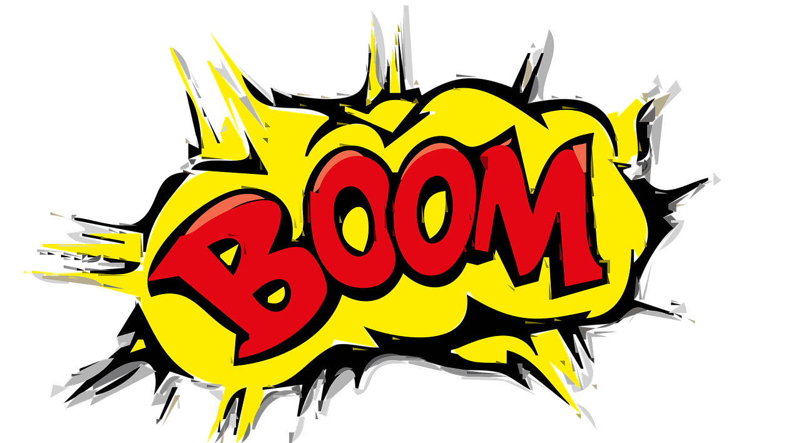

Planificamos nuestro podcast

Antes de empezar a crear nuestro podcast debemos hacer un trabajo previo de planificación para decidir:
Locutores
¿Quién hablará ante los micrófonos?
Tenemos un total de cuatro micrófonos, así que pueden intervenir de 1 a 4 locutores.
Aunque no es recomendable, porque pueden producirse ruidos indeseados durante la grabación, si es imprescindible, dos personas podrían compartir un mismo micro, así que el número de locutores puede aumentar hasta un máximo de 8. Pero solo tenemos 4 auriculares y, según lo que queramos grabar, es un detalle importante a tener en cuenta.
Pauta o escaleta (*)

Es el esquema del contenido básico del programa de radio:
|
|
|
Aspectos sonoros
Podemos buscar una sintonía* que haga de cabecera* del podcast y nos identifique, especialmente si queremos crear un programa que luego tendrá varios podcast o capítulos.
También es el momento de pensar en cuál será la música de fondo más apropiada. Podéis encontrar muchas canciones de diferentes estilos y con licencia de uso libre y gratuito en los siguientes enlaces:
- Pixabay
- Jamendo
- Freemusicarchive.com
- Bandcamp
- Legalfreemusicdownloads
- Música gratuita para comerciales (Youtube)
En esos enlaces también encontraréis fragmentos que os sirvan como cortinillas* o ráfagas* (útiles para separar secciones y/o noticias diferentes).
Efectos de sonido
Hay momentos en que os puede venir bien utilizar algún efecto de sonido, como pueden ser aplausos, un timbre, una explosión, lluvia...
Podéis encontrar muchos efectos de sonido diferentes en los siguientes enlaces:
*Si queréis saber más sobre estos y otros elementos sonoros propios de la radio
para incorporarlos en vuestro trabajo, podéis consultar el Glosario del Manual de estilo de RTVE.